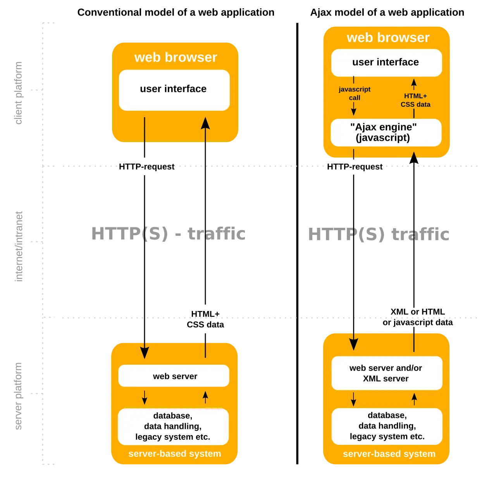

短答
Ajax 在页面加载之后获取数据。它本身不会给爬虫一个可以跟随的 URL。
对照图把完整文档加载和局部更新放在一起。人可以偏好局部更新。发现仍然需要文档。如果局部更新里才有产品列表的唯一副本，该列表就不在被获取的 HTML 里。SEO 健康要求有一些 URL，其 GET 响应包含列表，并且有锚点指向它们。
定义
没有服务器响应的 History API 地址是指向某个状态的书签，不是文档。只做获取的爬虫不会重放构建该状态的 Ajax 序列。除非 GET 返回文档，否则不要把 sitemap 指向这些地址。
抓取怎样遇到这条规则
给每个可发现的集合一个返回它的 URL，并且只把 Ajax 用作该 URL 的增强。
请求 /api/parts 并画出结果的筛选器，如果 /parts?family=gate 已经在 HTML 里返回相同条目并且被链接，就可以继续为人服务。API 不是抓取路径。HTML URL 才是。

要检查什么
- GET URL 的 HTML 包含 Ajax 本来会加载的条目
- 初始 HTML 中有指向这些 URL 的锚点
- 真正返回文档的历史地址
- API 没有被当作页面列进 sitemap
- 不运行脚本获取的一条分页 URL
一个结构示例
目录的“加载更多”按钮调用一个端点并追加卡片。没有第二个 URL。修复是增加分页 URL，把锚点放进第一页的 HTML，并在你仍想要这个手势时让按钮去获取同一个 URL。端点可以继续只服务于按钮。
它不声称什么
Ajax 增强不保证排名或引用。
Mika Visibility 把它归到哪里
Mika Visibility 把可抓取性放在 SEO 健康：robots 规则、状态码，以及爬虫能跟着走的路径。断开的路径和被挡住的模板是健康发现。缺主题不是。GEO 仍然依赖爬虫真正能到达的页面，但到得了并不等于替买家写好了答案。
对照图把完整文档和局部更新分开，因此只有文档被当作路径。
常见问题
为什么 Ajax 调用不是抓取路径？
Ajax 在页面加载之后获取数据。它本身不会给爬虫一个可以跟随的 URL。
调用旁边应该存在什么？
给每个可发现的集合一个返回它的 URL，并且只把 Ajax 用作该 URL 的增强。
Ajax 增强能保证排名吗？
Ajax 增强不保证排名或引用。
下一步
做一次结构化的 SEO + GEO 审计，查看健康发现、增长缺口和可以执行的蓝图。
更清晰的实体、答案、证据和上下文，会让页面更容易被理解与引用。任何回答产品中的结果都不作保证。